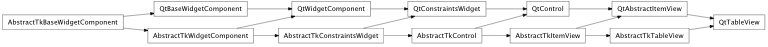
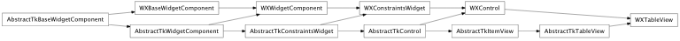

Bases: enaml.components.abstract_item_view.AbstractItemView
A view for tabular data.
Whether or not the vertical header is shown. Defaults to True.
Whether or not the horizontal header is shown. Defaults to True.
How strongly a component hugs it’s contents’ width. TableViews ignore the width hug by default, so they expand freely in width.
How strongly a component hugs it’s contents’ height. TableViews ignore the height hug by default, so they expand freely in height.
Overridden parent class trait
alias of __NoInterface__

Bases: enaml.backends.qt.qt_abstract_item_view.QtAbstractItemView, enaml.components.table_view.AbstractTkTableView
A Qt implementation of TableView.
The change handler for the ‘vertical_header_visible’ attribute of the shell object.

Bases: enaml.backends.wx.wx_control.WXControl, enaml.components.table_view.AbstractTkTableView
A wxPython implementation of TableView.
The underlying model.
The change handler for the ‘vertical_header_visible’ attribute of the shell object.
The change handler for the ‘horizontal_header_visible’ attribute of the shell object.
The event handler for the cell selection event. Not meant for public consumption.